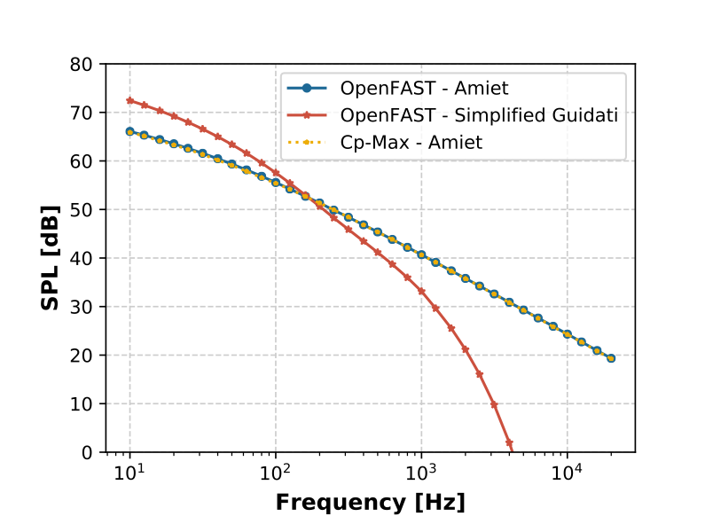
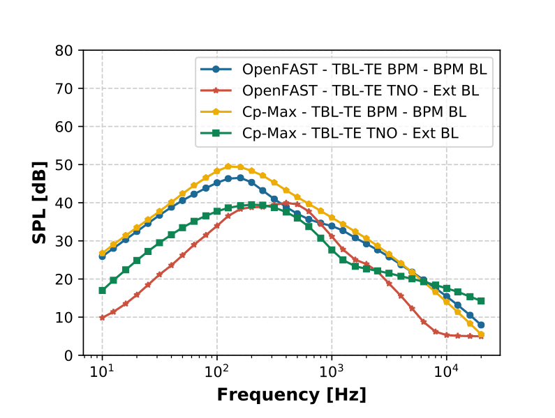
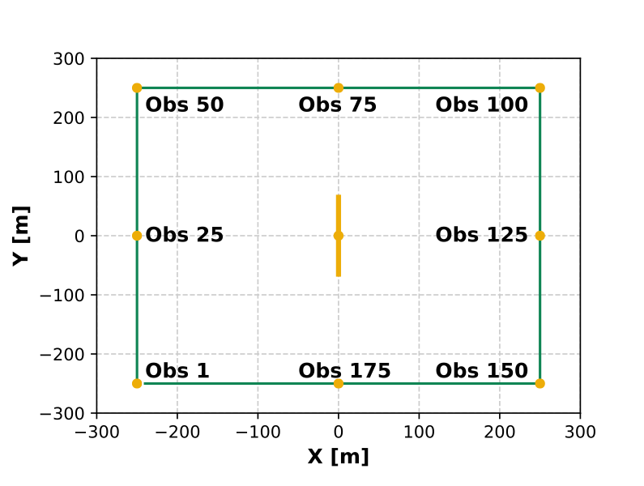
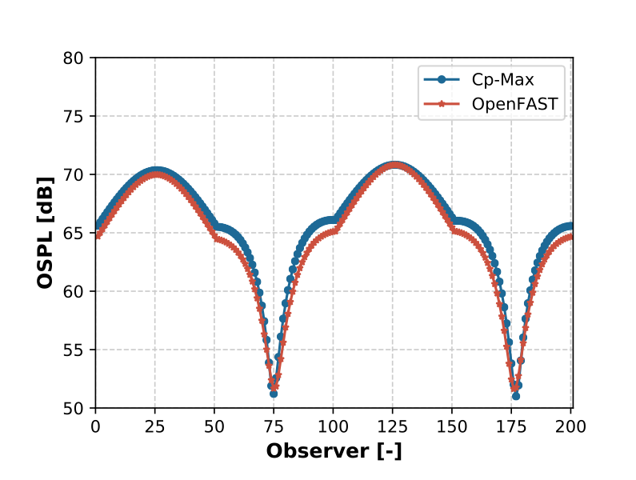
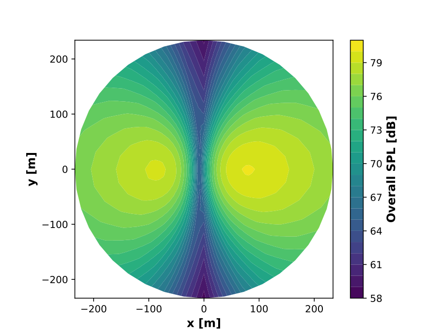
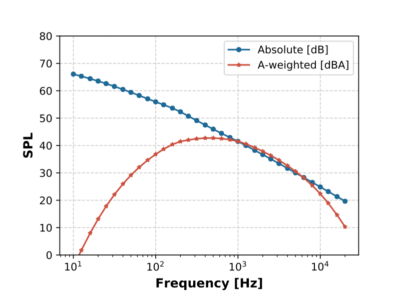
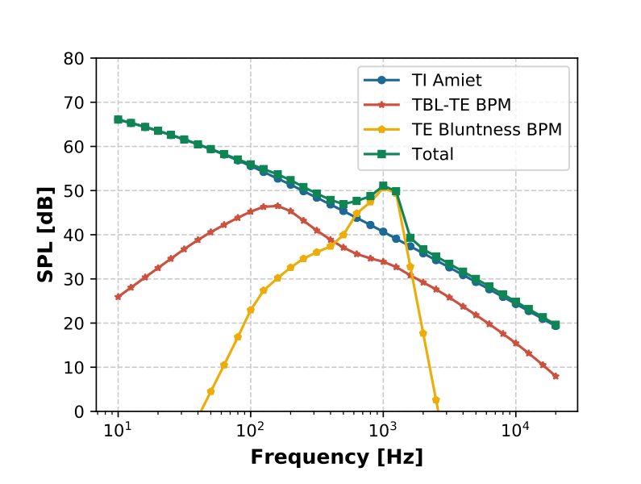
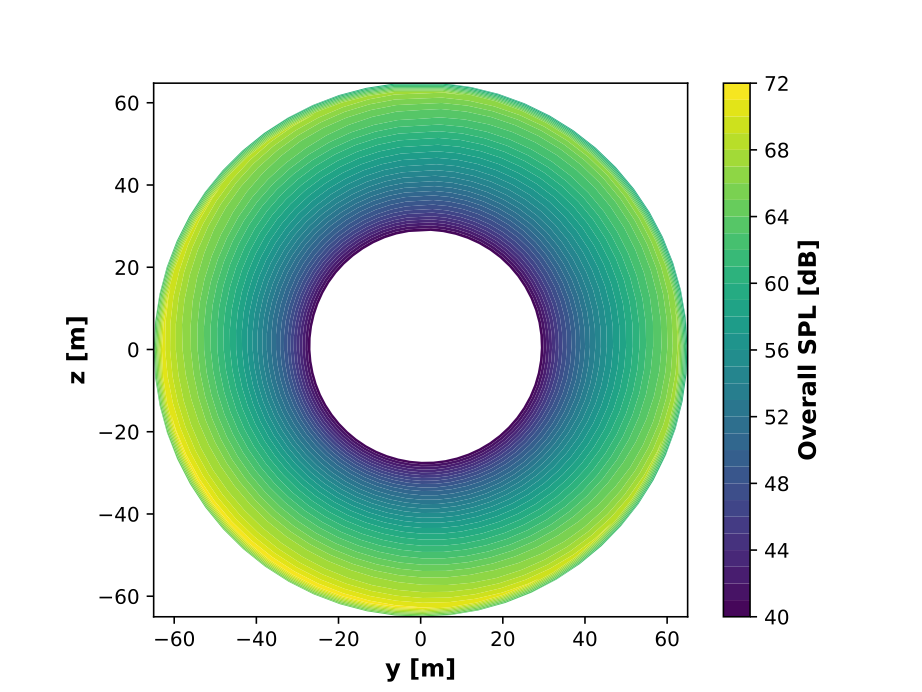

4.5.5. 모델 검증
4.5.5.1. 기준 풍력터빈
OpenFAST의 소음 모델은 IEA Wind Task 37 육상 기반 기준 풍력터빈([aa-BTD+19]). 기준 풍력터빈의 주요 특성은 다음과 같습니다. 표 4.2.
데이터 |
값 |
데이터 |
값 |
|---|---|---|---|
바람 등급 |
인터내셔널
전기기술
커미션 3A
|
정격 전기
전원
|
3.37메가와트 |
정격 공기 역학
전원
|
3.6메가와트 |
구동계 및
발전기 효율
|
93.60% |
로터 직경 |
130미터 |
허브 높이 |
110미터 |
컷인 풍속 |
4미터/초 |
컷아웃 풍속 |
25미터/초 |
로터 콘 각도 |
3도 |
나셀 틸트 각도 |
5도 |
최대 블레이드 팁 속도 |
80미터/초 |
정격 팁 속도
비율
|
8.16 |
최대
공기역학적 Cp
|
0.481 |
정격 로터 속도 |
11.75회전
분
|
풍력터빈의 OpenFAST 모델은 다음에서 구입할 수 있습니다. https://github.com/OpenFAST/r-test 이며 선택적으로 Reference OpenSource 컨트롤러에 연결됩니다. 2
4.5.5.2. 코드 간 비교
독일 뮌헨 기술 대학의 풍력 에너지 연구소에서 사용 가능한 구현을 사용하여 OpenFAST에 연결된 노이즈 모델의 구현을 검증하기 위해 상세한 코드 간 비교가 수행되었습니다. 후자는 Sucameli([aa-SBCB18])는 다물체 기반 공력탄성 솔버 Cp-Lambda를 채택한 풍력터빈 설계 프레임워크 Cp-Max에서 구현되었습니다.
단일 익형 프로파일과 전체 터빈 모두에 대해 주요 소음원(난류 유입 및 TBL-TE 소음)에 대한 비교가 수행되었습니다. 이는 몇 가지 구현 실수와 작은 불일치를 해결하는 데 도움이 되었습니다. 비교는 초당 8미터(m/s)의 정풍, 전단 없음, 정격 피치 각도 1.17도(deg), 고정 로터 속도 10.04rpm(분당 회전수)으로 수행됩니다. 입사 난류 강도에 대해 0.1의 고정 값이 가정됩니다. \(I_{1}\).
그림 4.18 는 OpenFAST의 공격 각도 보정이 포함된 Amiet 모델, OpenFAST에서 생성된 Simplified Guidati 모델 및 Cp-Max의 Amiet 모델에 대한 SPL 측면의 예측을 보여줍니다.


그림 4.18 TI 모델의 코드 간 비교
난류 유입 Amiet 모델의 두 가지 구현은 OpenFAST와 Cp-Max 간의 완벽한 일치를 반환합니다. 선택한 시나리오에서는 블레이드가 최적의 받음각에서 작동하는 것을 확인하므로 받음각 수정의 효과는 무시할 수 있습니다. 플롯은 또한 Amiet 모델과 단순화된 Guidati 모델 간의 큰 차이를 보여줍니다. 과거에는 단순화된 Guidati 모델이 여기에 적용된 +10dB 계수로 수정되었다는 점을 기억하는 것이 유용할 수 있습니다.
동일한 유입 및 회전자 조건에 대해 BPM 및 TNO TBL-TE 소음 모델을 비교합니다. 그림 4.19. 두 공탄성 솔버 간의 받음각 차이와 TNO 공식의 서로 다른 통합 방식으로 인해 약간 더 큰 차이가 발생하기는 하지만 일치는 다시 만족스럽습니다.


그림 4.19 BPM 및 TNO TBL-TE 모델에 대한 코드 간 비교. 경계층 속성은 BPM 모델(BPM BL) 또는 사용자가 정의한(Ext BL)로부터 추정됩니다.
마지막 비교에서는 다양한 관찰자 위치에서 지향성 모델과 전체 음압 레벨을 살펴보았습니다. 시뮬레이션은 500m x 500m의 수평 정사각형에 200명의 관찰자를 배포하여 실행됩니다(참조: 그림 4.20). 소음은 Amiet 및 BPM 난류 경계층 트레일링 에지 모델에서 계산됩니다. 코드 간 비교는 OpenFAST와 Cp-Max 간에 유사한 예측을 반환합니다. 비교는 다음과 같습니다. 그림 4.21.
이 코드 간 비교의 주요 결론은 작성자가 아는 한 모델이 이제 올바르게 구현되었으며 임의의 관찰자에 대해 유사한 SPL 및 전체 SPL 수준을 생성한다는 것입니다. 그럼에도 불구하고 제시된 모든 모델은 불완전하며 이론적 구현 수준 모두에서 개선이 이루어질 수 있다는 것이 분명합니다.


그림 4.20 관찰자의 위치 및 번호 지정


그림 4.21 이전 그림과 같이 분포된 관찰자의 전체 음압 레벨 비교
4.5.5.3. 모델 사용법
OpenFAST의 항공음향 모델에는 출력에 대한 4가지 옵션이 있습니다.
전체 음압 수준(dB/A 가중 데시벨[dBA]) - 관찰자당 시간 단계당 하나의 값이 생성됩니다.
총 음압 레벨 스펙트럼(dB/dBA) - 관찰자당 시간 단계당 하나의 스펙트럼이 10Hz ~ 20kHz 사이에서 생성됩니다.
메커니즘 종속 음압 레벨 스펙트럼(dB/dBA) - 관찰자당 시간 단계당 활성 소음 메커니즘당 하나의 스펙트럼이 10Hz~20kHz에서 생성됩니다.
전체 음압 수준(dB/A 가중 데시벨[dBA]) - 관찰자당 시간 단계당 노드당 블레이드당 하나의 값이 생성됩니다.
첫 번째 옵션의 전체 SPL을 사용하여 노이즈의 지향성 맵을 그릴 수 있습니다. Python 스크립트를 사용하여 생성된 예는 다음과 같습니다. 3 는 다음과 같습니다. 그림 4.22. 로터 1회전에 대한 평균 전체 SPL을 보여주는 노이즈 맵은 일정한 풍속 8m/s, 고정 로터 속도 10.04rpm, 피치 각도 1.17도에 대해 생성되었습니다. 직경 500m의 수평 원 안에 1681명의 관찰자가 2m 높이에 배치되어 있습니다. Simplified Guidati 및 BPM TBL-TE 소음 모델만 활성화됩니다.


그림 4.22 단순화된 Guidati 및 BPM TBL-TE 소음 모델의 2m 높이 기준 풍력터빈의 전체 SPL 맵입니다. 풍력터빈은 x=0, y=0에 위치합니다. 8m/s의 일정한 바람이 왼쪽(-x)에서 오른쪽(+x)으로 분다.
두 번째 출력은 SPL 스펙트럼을 생성하는 데 사용될 수 있습니다. 이러한 스펙트럼은 다양한 관찰자를 위해 계산될 수 있으며 선택적으로 인간의 청력을 설명하기 위해 A-가중치를 적용할 수 있습니다. 그림 4.23 는 이전 예와 동일한 로터 조건에 대해 계산된 총 SPL 스펙트럼을 보여줍니다. A-가중치는 1,000Hz 미만의 주파수에서 곡선을 크게 줄이는 반면, 1kHz와 8kHz 사이에서는 곡선을 약간 증가시킵니다.


그림 4.23 절대 SPL과 A-가중 SPL 비교
세 번째 출력은 메커니즘별로 SPL 스펙트럼을 구별합니다. 그림 4.24 는 이전에 보고된 동일한 로터 조건에 대해 각 잡음 모델로 추정된 다양한 SPL 스펙트럼을 보여줍니다. 전체 스펙트럼은 난류 유입, TBL-TE 및 뒷전 무딘 소음 메커니즘에 의해 가시적으로 지배됩니다. 특히 후자는 입력에 매우 민감합니다. \(\Psi\) 및 \(h\). 기준 풍력터빈은 순전히 수치 모델이며 이러한 수량은 임의로 설정되었습니다. 사용자는 뒷전 무뚝뚝함 모델을 호출할 때 이러한 입력에 주의를 기울여야 합니다. 문헌에 따르면 층류 경계층-와류 발산 및 팁 와류 소음 메커니즘은 음의 dB 값을 가지므로 표시되지 않습니다. 특히 이러한 스펙트럼은 A 가중치가 아니지만 사용자는 플래그를 활성화하여 A 가중치 스펙트럼을 얻을 수 있습니다.


그림 4.24 다양한 노이즈 메커니즘의 비가중 SPL 스펙트럼
마지막으로 네 번째 출력을 사용하여 로터 전체의 소음 방출을 시각화할 수 있습니다. 그림 4.25 는 풍하향 175m, 높이 2m에 위치한 관찰자가 본 로터의 소음 발생을 보여줍니다. 맵은 로터 1회전 동안 블레이드 1개에서 생성된 전체 SPL을 플로팅하여 생성됩니다. 플롯은 블레이드가 하강할 때 더 높은 소음이 관찰됨을 보여줍니다(뒤에서 로터가 시계 반대 방향으로 회전하는 것으로 보입니다). 이 효과는 에 표시된 결과와 일치합니다. [aa-MM03]는 비대칭으로 설명됩니다. (4.62). 관찰자가 익형의 앞쪽 가장자리를 향할 때 소음은 실제로 더 높습니다(높음). \(\Theta_e\)), 후미를 향할 때보다 (낮음 \(\Theta_e\)).


그림 4.25 단순화된 Guidati 및 BPM TBL-TE 소음 모델에서 얻은 기준 풍력터빈 로터의 전체 SPL 맵입니다. 관찰자는 바람이 불어오는 방향으로 175m, 높이 2m에 위치해 있습니다.